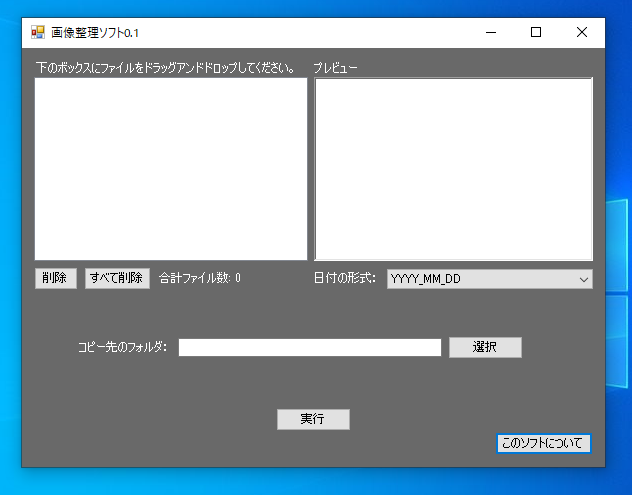

「シンプル画像整理ソフト」は、画像ファイルの作成日に基づいて年_月_日などのフォルダに自動で整理するソフトウェアです。
「画像整理ソフト」という名前ですが、画像ファイル以外も使用可能です。

このソフトウェアはプログラミング知識なしのなかやんがChatGPTと協力し作成したものであり、個人で検証した限りでは大丈夫です。
2024/4/13時点、Windows Defenderや最新版ESETのチェックではウイルスなどの脅威は確認できませんでした。大丈夫だとは思われますが個人で作成したソフトのため自己責任で使用してください。
以下のリンクをクリックして「シンプル画像整理ソフト1.0.exe」をダウンロード後、ダブルクリックすることで起動できます。インストールは不要です。